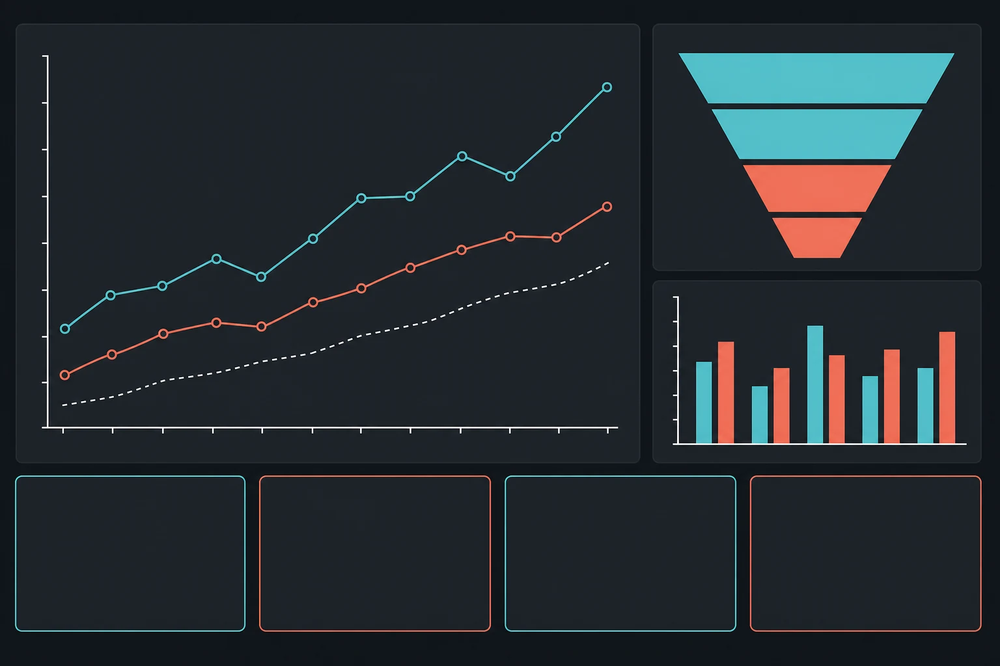

Website
Website
Бізнесам, які хочуть керований ріст
Коли важливо розуміти, скільки коштує заявка, що впливає на продаж і які дії дадуть наступний приріст.


Стратегічний маркетинг
Я допомагаю бізнесам запускати рекламу не навмання, а як частину цілісної системи: зі стратегією, зрозумілою воронкою, сторінкою, яка приймає трафік, і комунікацією, що доводить людину до заявки.
Кому підходить
Коли важливо розуміти, скільки коштує заявка, що впливає на продаж і які дії дадуть наступний приріст.
Реклама працює сильніше, коли можна перевіряти офери, креативи, посадкові сторінки й комунікацію з лідами.
Я не обіцяю “заявки завтра без змін”. Якщо воронка слабка, ми спочатку знаходимо й виправляємо вузьке місце.
Про мене
Я не про “просто запустити оголошення”. Я про систему, де рекламна стратегія, креативи, посадкова сторінка, обробка заявок і повторна комунікація працюють разом.
Я бачу, чому реклама іноді не дає очікуваного результату: слабкий офер, нечітка аудиторія, незручний сайт, довга відповідь у директі або відсутність наступного кроку.
Моя задача - не просто привести трафік. Моя задача - допомогти зрозуміти, що заважає бізнесу отримувати більше заявок, і вибудувати просування під реальний результат.
Результати


Що видно в роботі
Кожен звіт має відповідати на три питання: що спрацювало, що забирає бюджет дарма і який наступний крок має сенс для бізнесу.
вартість заявки або цільової дії
окупність і зв'язок реклами з доходом
якість заявок, а не тільки їх кількість
що тестуємо або вимикаємо далі

Що ви отримаєте
Реклама у Facebook та Instagram для людей, яким справді може бути цікавий ваш продукт або послуга.
ДетальнішеКонтекстна реклама в Google для моменту, коли людина вже шукає ваш товар або послугу.
ДетальнішеРобота з видимістю сайту в Google: структура, тексти, технічні моменти і пошукові запити.
ДетальнішеСторінки, які пояснюють цінність вашої пропозиції, знімають заперечення і ведуть до заявки.
ДетальнішеСистемне ведення соцмереж: контент-план, пости, сторіс, Reels і комунікація з аудиторією.
ДетальнішеКонтроль ключових показників, висновки з тестів і зрозумілі рішення для наступного кроку.
Обговорити задачуФормат співпраці
Аналіз поточного стану реклами, сайту, соцмереж і шляху клієнта до заявки.
діагностикаСтратегія під вашу задачу: аудиторії, офери, рекламні гіпотези, контент і посадкова сторінка.
стратегіяОптимізація кампаній і звіти з поясненням, що спрацювало, що змінюємо і куди рухаємося далі.
розвитокДіагностика
Чи зрозуміла ваша пропозиція для клієнта.
Чи готовий сайт або профіль приймати трафік.
Чи правильно обрана аудиторія і рекламний канал.
Чи не губляться заявки після першого контакту.
Що варто покращити перед запуском або масштабуванням.
FAQ
Залежить від ніші, географії й цілі. На діагностиці я підкажу мінімальний тестовий бюджет, який дасть не випадкові кліки, а корисні висновки.
Так. Аудит підходить, якщо вже є реклама, але незрозуміло, де губляться заявки, бюджет або якість лідів.
Швидкий доступ до даних, чесна інформація про продажі, фідбек по якості заявок і готовність впроваджувати рекомендації.
Перші сигнали з'являються після стартових тестів. Для рішень по масштабуванню потрібна стабільніша статистика, а не один випадковий хороший день.
Консультація